第五讲：知识库构建与学术品味蒸馏
课程讲义 · 网页教材
课程： 人工智能在经济管理研究中的应用
授课人： 张晨（西北农林科技大学经济管理学院）
讲次： 第 5 次课（2 课时）
日期： 2026 年夏季学期
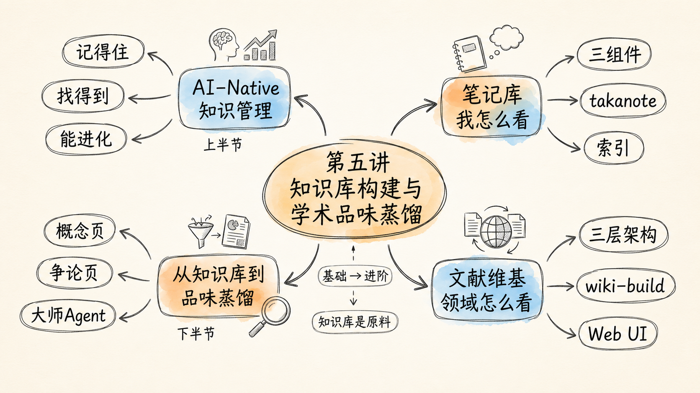
本讲概览
前四讲，你学会了操作 Agent、创建 Skill、跑通实证分析。但你可能会发现一个问题：每个项目做完后，经验似乎「消失」了——下次做类似任务时，AI 还是从零开始。
本讲回答一个更根本的问题：如何让 AI 的知识和能力持续积累，而不是每次从头开始？
答案分两步走。
上半节（知识库构建）： 搭建一个「记得住、找得到、能进化」的知识系统。将你的笔记和论文变成 AI 能调用的结构化知识——从此每次的经验都变成下一次的起点。
下半节（学术品味蒸馏）： 在这套知识系统之上，蒸馏顶级学者的「研究品味」。把一位学者 20 篇论文中的隐性决策模式提炼为可调用的 AI Agent，让你在写作时有「大师」坐在旁边，告诉你哪里不够好、应该怎么改。
这两部分不独立——上半节是基础，下半节是进阶应用。没有知识库，品味蒸馏就缺少原材料；没有品味蒸馏，知识库就只是储存，无法转化为研究能力。
上节：知识库构建
1. 为什么要建知识库？
先想一个场景。你在第三讲中让 Agent 跑了一次 DID 回归，遇到了标准误聚类层级的问题——Agent 在企业层面聚类，但政策在城市层面实施。你花了两小时才找到这个错误并修正。
然后，第四讲你做另一个项目，又是 DID——Agent 又犯了同样的错误。你不得不再次花时间纠正。
这不是 Agent 的问题——是你没有把第一次的经验「教会」AI。每一次纠正都是一次教学机会，但如果不记录下来，这个教学就只存在于那个回话里，随着 /clear 消失了。
核心事实：AI 的价值不在于一次任务做得有多好，而在于你能不能积累规则、上下文和工作流程。 知识库的目的就是让这些知识可积累、可检索、可进化。每一次的经验都变成下一次的起点。
这对经管研究者尤其重要，因为我们的知识结构有几个特点：
- 文献密集： 一个研究方向可能涉及几十到上百篇论文，每篇文章的方法、数据、结论相互关联
- 方法积累： Stata 命令、识别策略、数据处理技巧——这些不是一次性的，是反复用的
- 隐性知识： 哪些期刊偏好什么风格、哪些审稿人关注什么问题——这些只能从经验中学习
- 持续时间长： 一篇论文从构思到发表可能两三年，知识管理跟不上就会遗忘
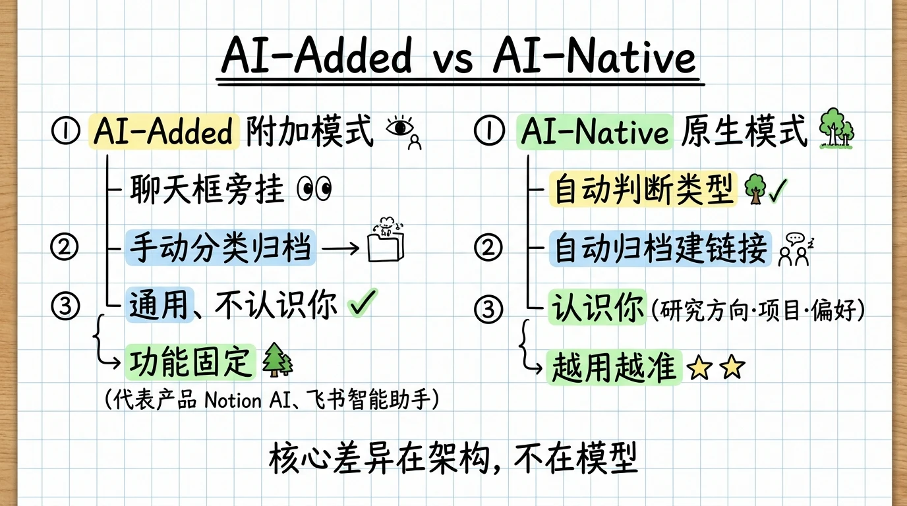
上图反映了一个关键对比：AI 的「原生能力」是固定的——每次对话都是独立的、知识不积累。但「赋能后的能力」随着你的使用而持续提升——因为每一次交互都在丰富它的知识库。你的目标不是找到一个更聪明的模型，而是建立一个更聪明的系统。
2. 三种知识库技术路径
搭建 AI 知识库有三种主流技术路径。选哪条路，取决于你的研究类型和数据形态。但首先要明白每种路径的本质差异——不是「哪种更好」，而是「哪种更适合你的场景」。
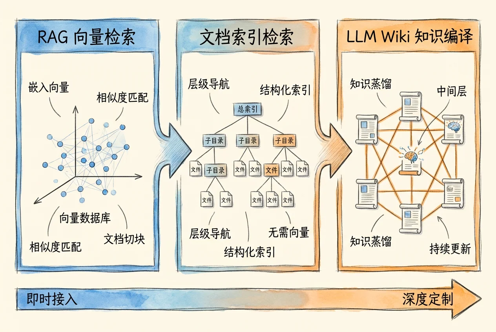
| 路径 | 原理 | 优势 | 劣势 |
|---|---|---|---|
| RAG / 向量检索 | 文档切片 → 嵌入向量 → 语义搜索 | 速度快，可扩展 | 切片丢失上下文；嵌入模型参数量小（~0.5B vs LLM ~1T），理解力远弱于完整 LLM |
| 文档索引检索 | 分类目录 +_index.md + LLM 推理导航 |
充分利用 LLM 推理能力，不丢上下文 | 需要提前组织分类结构 |
| LLM 多层蒸馏 | 论文 → Markdown → Wiki → 查询 | 结构化知识，质量最高 | 构建成本高，适合文献密集型研究 |
深入剖析：为什么 RAG 不适合学术研究？
RAG 的工作流程是：把每篇论文切成几百个段落片段，每个片段用嵌入模型（如 text-embedding-3-small）编码成一个向量。查询时，用户的提问也被编码为向量，系统用余弦相似度找到「最相似」的几个片段，拼在一起喂给 LLM。
问题出在三个环节：
第一，切片破坏论证结构。 一篇论文的引言、文献综述、模型设定、回归结果、稳健性检验是一个完整的论证链条。RAG 把它切成独立片段——每个片段可能召回，但片段之间的关系丢失了。你问「这篇论文的识别策略有什么问题」，RAG 可能只召回结果部分的一个片段（因为那里提到了识别策略的关键词），而漏掉了方法和稳健性部分关于识别假设的讨论。
第二，嵌入模型的语义理解力有限。 嵌入模型的参数量通常在 0.3B-0.5B 级别，训练目标是「相似文本产生相似向量」，而非「理解文本含义」。一个 0.5B 的嵌入模型和一个 1T 的 LLM 之间的理解力差距，相当于小学生的概括能力 vs 博士生的分析能力。用 0.5B 的模型去理解内容再喂给 1T 的模型，是让小学生给博士生做预习摘要。
第三，学术检索不是关键词匹配。 你问「最新的 DID 方法如何处理交错处理的异质性处理效应」，这涉及对方法论的深层理解——需要理解 DID、交错处理、异质性处理效应三个概念之间的关系。向量检索只能做表面的语义相似，无法做这种多概念关系推理。
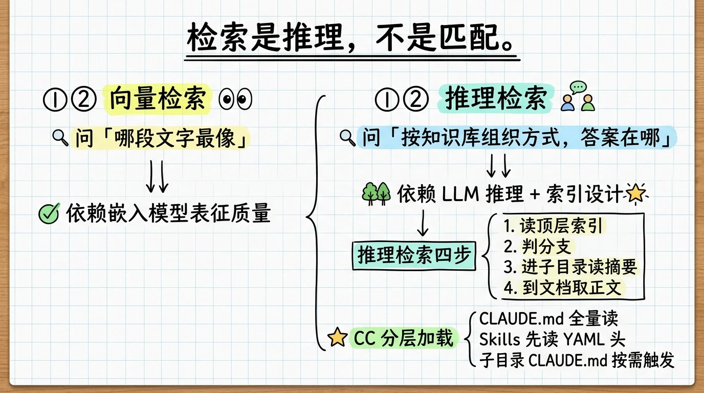
课程推荐方案：文档索引检索（笔记系统）+ LLM 蒸馏（文献 Wiki）的组合。
文档索引检索的思路完全不同：让 LLM 直接读 _index.md（每个目录下的一页索引，列出每篇笔记的标题和一句话摘要），用自己的推理能力判断答案最可能在哪，然后精准读取那几篇。
这就像你和一位熟悉你书架的研究助理的对话：
- RAG：「帮我找和 DID 方法相关的所有段落。」——给你一堆碎片
- 推理检索：「DID 方法方面的笔记在哪里？」——指向
4_学习/计量方法/DID/，然后 LLM 自己去看
核心差异：RAG 用嵌入模型做「相关性判断」→ 把结果给 LLM。推理检索直接用 LLM 做「相关性判断」+「内容理解」。 LLM 的理解力远强于嵌入模型，所以后者质量远高于前者——代价是速度慢一点、需要提前组织分类。
3. AI 原生笔记系统（AiNote）
AiNote 是一个完全由 AI 管理、人类只需要输入原始想法的知识系统。它的核心设计哲学是：你只管输入，AI 管组织。你不需要操心标签体系、目录分类、交叉引用——这些都由 AI 根据你的输入自动完成。
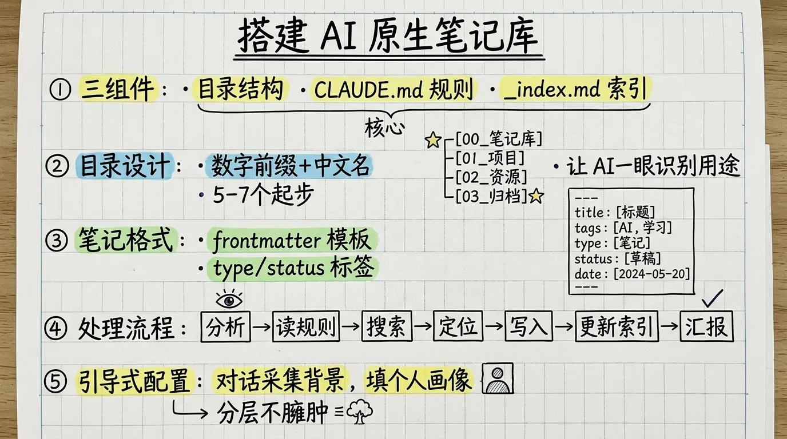
3.1 目录结构
AI-notes/
├── 0_导航/ # 外部资源索引（数据库链接、常用网站、工具清单）
├── 1_关于我/ # 个人背景、研究偏好、学术经历
├── 2_想法/ # 灵感、随手记、研究点子
├── 3_工作/ # 项目文档、任务推进、会议准备
├── 4_学习/ # 读书笔记、课程材料、文献笔记
├── 5_会议/ # 会议记录、学术交流记录
├── 6_研究/ # 调研分析、文献综述、研究设计
├── 7_教学/ # 课程讲义、教学材料
├── 8_附件/ # 图片、PDF、数据文件
└── 9_AI相关/ # AI 工具、技术备忘、提示词库每个目录有编号前缀——这不是为了好看，而是控制 AI 的搜索顺序。当 AI 需要查找信息时，编号决定了它先看哪个目录。你是经管研究者，所以 6_研究/ 和 4_学习/ 会是最活跃的两个目录。
一个实际例子：你的 4_学习/ 目录经过一个学期的积累后，可能变成这样：
4_学习/
├── _index.md # 「计量方法/ 共 8 篇 - DID、IV、RD、合成控制...」
├── 计量方法/
│ ├── _index.md # 「交错DID注意事项」「Bartik IV使用指南」...
│ ├── 交错DID的聚类层级选择.md
│ ├── Bartik IV的份额数据来源.md
│ └── ...
├── 农业经济/
│ ├── _index.md
│ ├── 数字普惠金融与农户创业.md
│ ├── 土地流转与农业劳动生产率.md
│ └── ...
└── 工具与数据/
├── _index.md
├── CHFS数据使用笔记.md
├── Stata常用命令速查.md
└── ...每当你读完一篇新论文或学到新方法，只需要告诉 AI「帮我记一下」，它就会自动判断这篇笔记应该放在哪里、打什么标签、链接到哪些已有笔记。
3.2 CLAUDE.md：系统控制中枢
笔记库的 CLAUDE.md 是整个系统的「宪法」。它定义了 AI 如何处理你的每一次输入。核心是 7 步处理流程：
你输入一句话/一段文字/一个文件
│
├─ 第1步：分析主题和类型
│ 这是「文献笔记」还是「方法论备忘」还是「研究想法」？
│
├─ 第2步：搜索相关笔记
│ 有没有已有笔记和这个输入相关？
│
├─ 第3步：判断新建还是更新
│ 如果已有相关笔记，是更新原有笔记还是新建一篇？
│
├─ 第4步：创建或更新笔记
│ 按标准模板创建，或补充到已有笔记的相关章节
│
├─ 第5步：添加标签和交叉引用
│ 自动添加类型标签 + 主题标签 + [[双向链接]]
│
├─ 第6步：更新 _index.md
│ 在对应目录的索引中添加新笔记的标题和一问话摘要
│
└─ 第7步：告知结果
「已在 4_学习/计量方法/ 中创建 'XXX.md'，链接到 2 篇相关笔记」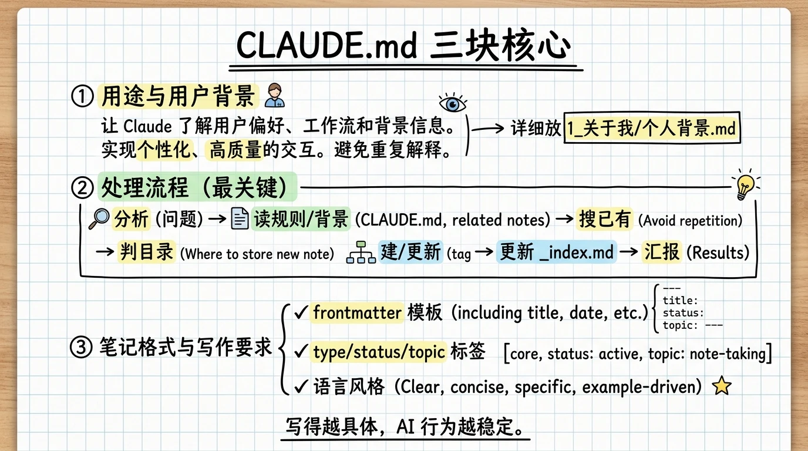
3.3 _index.md 索引文件
每个目录下需要有一个 _index.md，列出该目录中每一篇笔记的标题和一句话摘要。这是推理检索的核心基础设施。
举例，4_学习/计量方法/_index.md 可能长这样：
# 计量方法笔记索引
- [[交错DID的聚类层级选择]] - 标准误应聚类到处理分配层级（通常为城市/县），而非个体层级
- [[Bartik IV的份额数据来源]] - 行业份额从普查数据获取，全国增长率从 BEA 获取
- [[RDD带宽选择最佳实践]] - CCT 方法优于 IK 方法，使用 rdrobust 包
- [[合成控制法的安慰剂检验]] - 对每个控制单元做 in-space placebo，排序 p 值
...当 LLM 读到这里，它不需要扫描每篇笔记的全文就能知道：「交错 DID 聚类问题在第三篇，Bartik IV 数据源在第三篇」。然后它精准地打开那篇笔记。
这就是推理检索相对于向量检索的核心优势：用 LLM 的推理能力替代向量相似度计算。 LLM 的推理能力远超嵌入模型的理解力，所以推理检索的准确率和召回率都远高于向量检索——代价是每次查询要多读一页索引。
3.4 三个核心 Skill
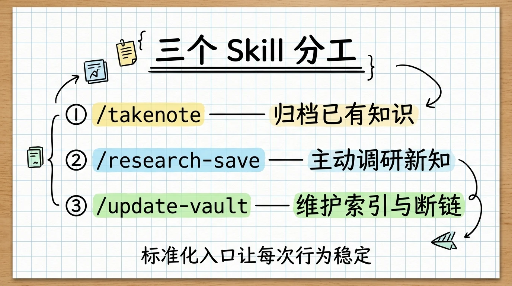
| Skill | 功能 | 触发方式 | 典型场景 |
|---|---|---|---|
/takenote |
归档已有知识（文本、想法、附件提炼） | 「记一下」「帮我整理成笔记」 | 读了一篇论文、参加了一个会议、想到一个研究点子 |
/research-save |
主动调研获取新知识，导入笔记库 | 「研究一下 X 并保存到笔记」 | 想了解一个新方法、查一个政策细节、对比几篇文献 |
/update-vault |
定期维护索引、修复断链、去重合并 | 每周自动或手动触发 | 笔记多了以后，发现重复内容、断掉的链接、过时的信息 |
三个 Skill 的协作关系：
/takenote 和 /research-save 是「写入」操作——前者处理已有信息，后者主动获取新信息。/update-vault 是「维护」操作——定期清扫，保持知识库的整洁。三者的分工很清晰：日常用 /takenote，需要深入了解某个主题时用 /research-save，每周用一次 /update-vault 保持整洁。
实战演示：从一句话到一篇笔记
你输入：「今天读到一篇关于数字普惠金融的论文，
用 CHFS 数据发现对农户创业有正向影响，DID 识别。」
AI 处理流程：
1. 分析主题：数字金融、农户创业、CHFS、DID
2. 搜索笔记库：有没有已有相关笔记？
- 找到 4_学习/农业经济/农村金融发展.md（相关）
- 找到 4_学习/工具与数据/CHFS数据使用笔记.md（相关）
- 找到 4_学习/计量方法/双重差分DID入门.md（相关）
3. 决定新建（因为是一篇新论文的阅读笔记）
4. 创建笔记：4_学习/农业经济/数字普惠金融与农户创业.md
5. 添加标签：type/literature-note, topic/digital-finance, topic/entrepreneurship, method/DID
6. 添加交叉引用：[[农村金融发展]]、[[CHFS数据使用笔记]]、[[双重差分DID入门]]
7. 更新 4_学习/农业经济/_index.md
8. 告知：「已在 4_学习/农业经济/ 中创建笔记，链接到 3 篇相关笔记」一个月后，你可能读到另一篇关于数字金融与农村消费的论文。AI 发现 4_学习/农业经济/ 下已有相关笔记，它可能会建议在已有笔记下添加一节「对消费的影响」，也可能新建一篇——取决于新内容的独立程度。这就是知识在有机生长。
4. 文献 Wiki：三层知识蒸馏
文献 Wiki 是笔记系统的进阶：将一组 PDF 论文编译为结构化、可查询的知识网络。 它特别适合需要深度掌握一个领域的博士生和青年学者——比如你要做开题报告，需要系统梳理一个领域 30-50 篇核心论文。
笔记系统和文献 Wiki 的关系是：笔记库是你和 AI 共建的「个人知识花园」，文献 Wiki 是 AI 从论文中提取的「学术领域地图」。
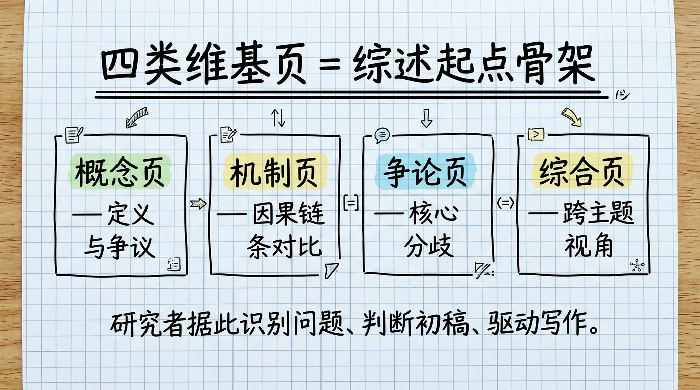
4.1 三层架构
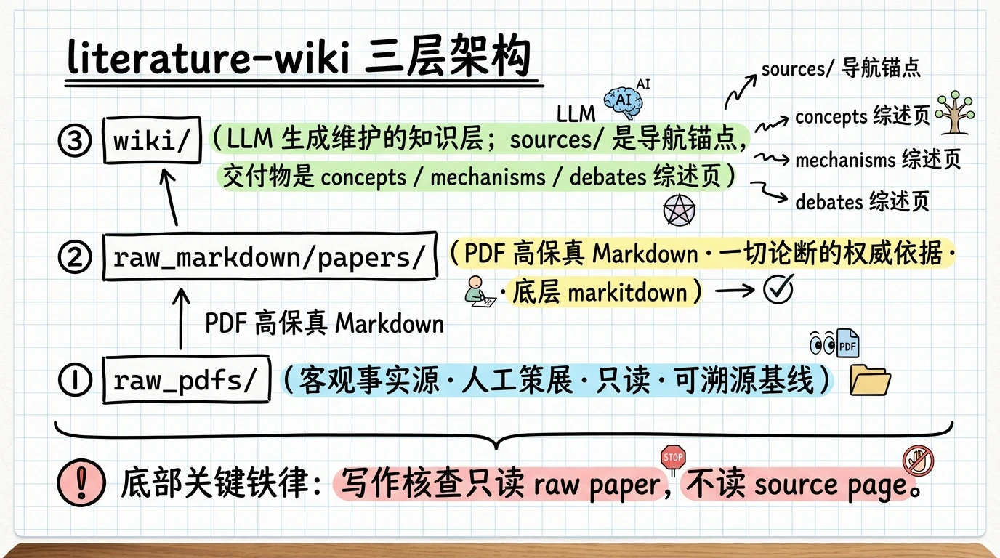
literature-wiki/
├── raw_pdfs/ # 第一层：原始 PDF（只读，不可变事实源）
│ └── smith2023.pdf
│ └── jones2024.pdf
│ └── ...
├── raw_markdown/ # 第二层：高保真 Markdown 转换
│ └── papers/
│ ├── smith2023.md # 完整转换，保留表格、公式、脚注
│ ├── jones2024.md
│ └── ...
└── wiki/ # 第三层：LLM 编译的结构化知识
├── sources/ # 每篇论文的结构化摘要（问题、方法、结论、贡献）
├── concepts/ # 核心概念页（如「处理效应异质性」「广延边际 vs 集约边际」）
├── mechanisms/ # 机制与理论（如「信息不对称如何影响信贷配给」）
├── methods/ # 方法与识别策略（如「交错 DID 的最新进展」）
├── measures/ # 度量指标（如「数字经济的三种度量方式」）
├── debates/ # 学术争议（如「最低工资的就业效应：争议与共识」）
└── synthesis/ # 综合横截页面（如「数字经济与农业生产率：研究全景」）为什么需要三层？
第一层（raw PDF）是不可变事实源——无论后续转换或编译出了什么问题，你永远可以回到原始 PDF 验证。
第二层（raw Markdown）是所有主张的权威依据——Wiki 中每一个论断都可以追溯到 raw Markdown 中的具体段落。这是防止 AI 幻觉的关键设计。
第三层（wiki）是查询与思考的界面——你不是在这个层做事实核查，而是在这个层获得理解和灵感。所有事实宣称都可以向下追溯到第二层验证。
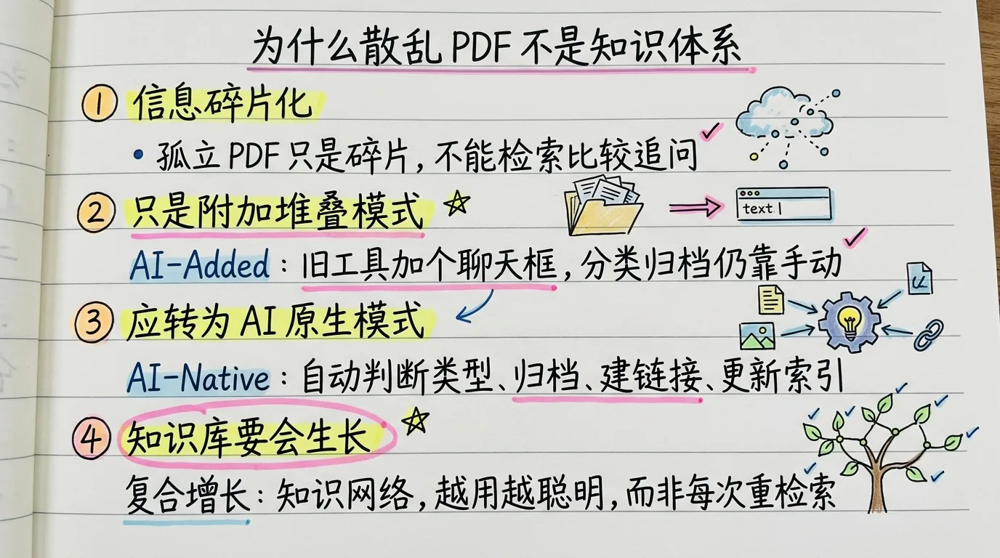
为什么必须转 Markdown？ PDF 是「人类阅读格式」——它关心的是排版（分栏、页码、字体），不是语义结构。表格在 PDF 中是一堆散落的字符，公式是嵌在文本流里的碎片，脚注和正文被分栏拆开。PDF 解析器经常把一篇流畅的论文转成语义支离破碎的文本。而 Markdown 保留了语义结构：表格是表格（| col1 | col2 |），公式是公式（$$E=mc^2$$），标题层级明确。AI 在 Markdown 上的理解准确率远高于 PDF 文本提取。
转换工具的选用很重要。minerU 对中文学术论文的表格和公式识别最好，markitdown 速度快适合批量处理（尤其是 Microsoft Office 文档），PyMuPDF 轻量适合简单的文本提取，marker-pdf 对英文论文的转换质量很高。根据你的论文来源选择合适的工具。
4.2 /wiki-build 六阶段编译管线
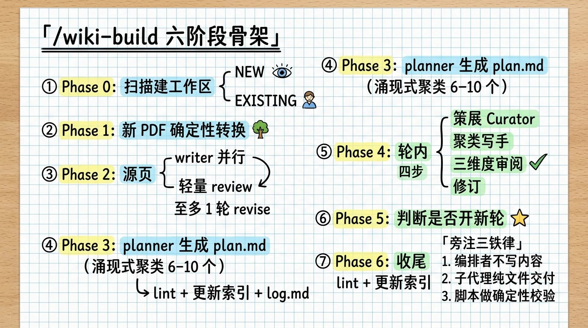
第一阶段：PDF → Markdown
批量转换所有 PDF 为高保真 Markdown。
这一步是机械的，但质量控制很重要——
抽查 10% 的转换结果，确认表格和公式都保留了。
第二阶段：分析全部论文，生成动态模板
AI 通读所有 raw Markdown，识别这个领域的「知识结构」——
有哪些核心概念？用什么方法？争论什么？度量什么？
根据分析结果生成 wiki/ 的子目录结构。
（不同的领域会生成不同的子目录结构——这是「动态」的含义）
第三阶段：生成编译计划
AI 制定一个任务清单：
- 哪篇论文贡献哪些 wiki 页面
- 哪些页面可以从论文的某个段落直接提取
- 哪些页面需要跨论文综合（如 synthesis/ 页面）
第四阶段：并行撰写
分派多个子代理，每个子代理负责一组 wiki 页面。
子代理不允许生成 wiki 内容以外的任何输出。
所有输出直接写入文件，不返回给主代理。
（保护上下文窗口——主代理只需要知道「完成」还是「失败」）
第五阶段：独立审查
审查代理独立验证（不是检查代码输出，而是像审稿人一样读 wiki 页面）：
- 每个论断是否有 raw Markdown 依据？
- 跨页面的术语是否一致？
- 有没有重复或矛盾的内容？
- 引用的论文是否正确？
发现问题 → 标注 → 第四阶段子代理修订 → 再审查。
第六阶段：构建索引和双向链接
在所有 wiki 页面之间建立 [[双向链接]]，
生成每个目录的 _index.md，
构建完整的知识网络。三铁律：
- 编排者不生成 wiki 内容——只规划不写。编排 Agent 的任务是拆解和分配，不是产出。这和期刊编辑不自己写论文是一样的道理。
- 子代理通过纯文件交付——不污染主代理上下文。每个子代理的输出直接写入文件，主代理只收到状态摘要（成功/失败/需要修订）。
- 确定性校验用脚本——不用 LLM 做算术。如统计页面数量、检查链接有效性、对比文件哈希值——这些用 Shell 脚本或 Python，比 LLM 可靠得多。
4.3 /wiki-query 查询演示
你: 「什么是企业？」
AI 查询流程：
1. wiki/concepts/what-is-a-firm.md
→ Coase (1937): 企业是对价格机制的替代
→ Williamson (1975): 资产专用性决定企业边界
→ Hart & Moore (1990): 剩余控制权理论
2. wiki/debates/boundary-of-the-firm.md
→ Coase vs Klein: 长期合同能否替代一体化？
→ 实证证据：Gibbons & Henderson (2013)
3. wiki/concepts/transaction-cost.md
→ 交易成本的三种类型：搜索、谈判、执行
→ 在经验研究中的度量方法
4. 如需更详细信息 → 回到 raw_markdown/ 查原始论文的完整论证这就是「推理检索」——AI 不是搜索「企业」这个关键词（那会返回几百个无关结果），而是根据分类逻辑判断：关于「企业」的定义，最可能出现在 concepts/ 目录下，而讨论和争议在 debates/ 下。
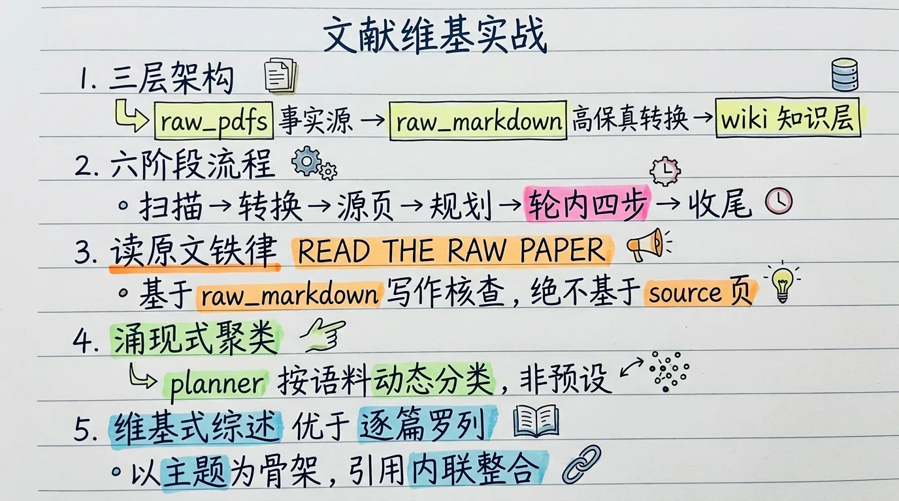
4.4 Web UI：让知识可见
/wiki-serve 可以一键启动本地 Web 服务器，提供三种浏览模式：
| 模式 | 技术 | 功能 |
|---|---|---|
| Search | MiniSearch（客户端全文搜索） | 零后端、离线可用 |
| Browse | 双栏渲染 | wikilink、callout、KaTeX 数学公式 |
| Chat | 可选 RAG 后端 | 自然语言提问，优雅降级 |
你可以把文献 Wiki 想象成你的「个人学术搜索引擎」——但它只收录你精选的论文，你可以完全信任它不会返回随机内容。
5. 双库协同与自进化闭环
5.1 双库协同
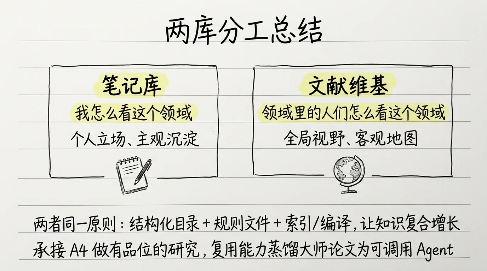
| 库 | 视角 | 回答什么问题 | 内容示例 |
|---|---|---|---|
| 笔记库（AiNote） | 「我怎么看」 | 我的观点、我的项目、我的经验 | 「这篇论文的 IV 选择有问题，因为工具变量和被解释变量可能存在反向因果」 |
| 文献 Wiki | 「大家怎么看」 | 学术共识、理论进展、方法演变 | 「Bartik IV 的有效性争议：Goldsmith-Pinkham 认为份额内生，Borusyak 认为只要独立于样本内冲击即可」 |
两者的协作方式：文献 Wiki 提供学术语境，笔记库记录你的独特洞见。 当你写论文时，AI 可以同时调用两个库——从文献 Wiki 获取学术背景（「这个领域用什么方法、有什么争议」），从笔记库提取你的个人判断（「你觉得哪种方法更好、为什么」）。
一个具体的写作场景：
你：「帮我写引言中的文献评述部分，关于数字金融对农户创业的影响。」
AI 的内部处理：
1. 查询文献 Wiki 的 synthesis/ 页面
→ 找到 5 篇相关论文的结构化摘要，了解学术共识和研究缺口
2. 查询笔记库
→ 找到你读这 5 篇论文时写的批注：
「张三 2023 的 IV 可能有问题」
「李四 2024 的样本只覆盖东部省份」
3. 生成文献评述：
「现有文献普遍发现数字金融对农户创业的正向影响（张 2023；李 2024），
但在识别策略上存在局限性——张（2023）的工具变量有效性存疑，
而李（2024）的样本代表性限制了外部有效性...」你的判断（笔记库中的批注）成为了文献评述的核心论点，而文献 Wiki 提供了事实依据。这才是 AI 辅助学术写作的正确方式——AI 提供事实、逻辑和结构，你提供判断和洞见。
5.2 自进化闭环
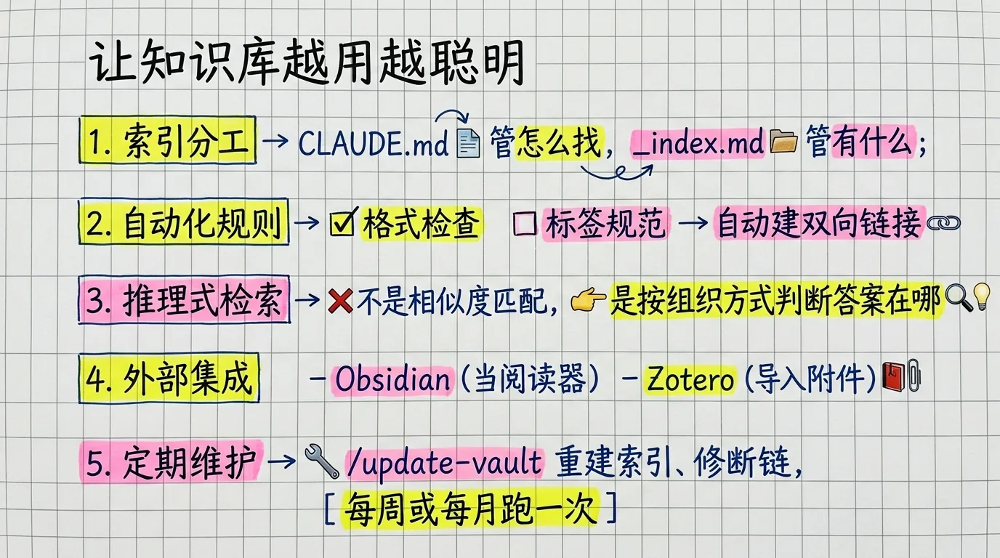
使用 Agent 完成任务
│
├─ 复盘：这次有什么经验教训？
│ ├─ 什么做得好？→ 记录下来，下次复用
│ └─ 什么做得不好？→ 分析原因，制定规则
│
├─ /learn：将经验写入记忆库
│ ├─ 更新 CLAUDE.md 的规则
│ ├─ 在笔记库中创建经验笔记
│ └─ 更新相关 Skill
│
├─ 下次遇到类似任务
│ ├─ AI 启动时自动读取相关记忆
│ └─ 应用上次学到的规则
│
└─ 表现更好 → 继续复盘 → 持续进化这是「人的反馈只输入一次」的实践——你纠正了 AI 一次，它永远记住，不需要说第二遍。
具体例子：你在第三讲的 DID 回归中发现了标准误聚类层级的问题。复盘时，你在笔记库中记录：「DID 中标准误应聚类到处理分配层级」。然后你更新了 stata-basic Skill，加入这条规则。下一次你做 DID 时，AI 在生成 do 文件之前就会自动检查聚类层级——因为它读过你的笔记，知道这是你关注的点。
这就是「自进化」的含义：每一次任务都不只是完成任务，而是在训练你的 AI 系统。 系统随着你的使用变得越来越「懂你」——知道你的关注点、记得你的偏好、了解你的研究风格。
6. 文献综述实战
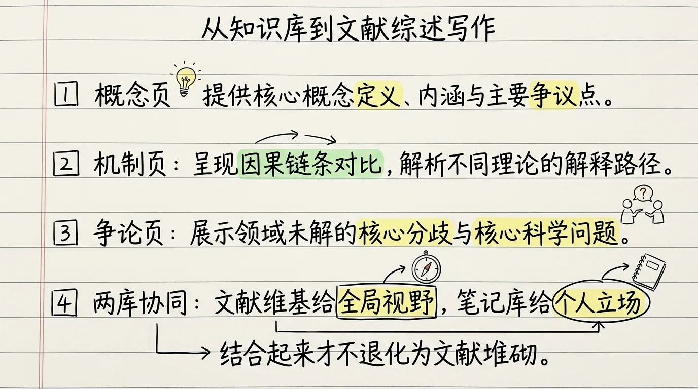
任务： 用多 Agent 委派完成一个小型文献综述。这是将知识库构建能力立即用于研究的实战。
步骤：
- 创建项目文件夹
lit-review-ai-economics/，遵循四分区骨架 - 放入 3-5 篇相关主题的 PDF 论文到
input/papers/ - 用
/init初始化 CLAUDE.md - 用自然语言告诉 AI：
请帮我做这个文献综述项目：
1. 读取 input/papers/ 中的每篇论文
2. 为每篇论文提取：研究问题、识别策略、主要结论、核心贡献
3. 汇总成一份文献综述初稿
4. 输出到 output/literature-review.md
对于多篇论文的阅读，请派出多个子代理并行处理。
每个子代理读取一篇论文，将结构化摘要写入 notes/ 文件夹。
所有子代理完成后，再由一个子代理汇总写入初稿。- 在
notes/中检查各子代理的结构化摘要是否正确——这是质量控制的关隘 - 审核
output/literature-review.md的引用是否准确
重要提醒（来自前几讲的经验）： AI 生成的文献引用有约 20% 是完全虚构的。每一条引用必须回到原文逐条验证，不能直接用于论文。AI 阅读文献最好先转化为 Markdown 格式，常用工具有 markitdown、minerU、pymupdf、marker-pdf。注意和 pandoc 的区别——pandoc 是通用文档转换器，markitdown 等是专门针对 LLM 处理优化的转换工具。
7. 上节小结
| 概念 | 一句话解释 |
|---|---|
| 知识库 | 让 AI 的知识可积累、可检索、可进化的系统 |
| 推理检索 > 向量检索 | LLM 的推理能力远强于嵌入模型，用_index.md 而非向量切片 |
| AiNote | 目录结构 + CLAUDE.md + _index.md + 三大 Skill = AI 原生笔记系统 |
| 文献 Wiki 三层 | raw PDFs → raw Markdown → 结构化 wiki 页面，可向下追溯验证 |
| 双库协同 | 笔记库（我怎么看）+ 文献 Wiki（大家怎么看）——写作时两边都查 |
| 自进化闭环 | 使用 → 复盘 → 记忆 → 下次更好——每一次经验都是训练数据 |
下节：学术品味蒸馏
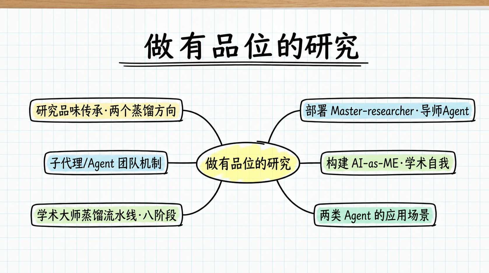
1. 什么是研究品味？
如果你问一位经济学家「什么是好研究」，他会给你列出一堆标准——问题重要、识别干净、写作清晰。但如果你问他「这篇论文你觉得怎么样」，他的判断可能是即时的——不用对照 checklist，直觉就知道好坏。
这种直觉就是研究品味。
品味不是玄学。它是顶级学者在每篇论文中反复体现的一组决策模式：
- 怎么选问题？ 是从现实政策出发（如最低工资对就业的影响），还是从理论缺口出发（如网络形成中的均衡精炼）？什么算「重要问题」，什么算「技术练习」？
- 怎么设计识别？ 是用自然实验、IV、DID、RD 还是结构估计？什么情况下选哪个？内生性有多严重才算「必须处理」？
- 怎么写引言？ 是政策问题开篇（「最低工资法影响数百万工人，但我们不知道…」），还是理论动机开篇（「均衡精炼一直是博弈论的核心挑战…」）？结果预览到什么粒度——只给方向，还是给出具体数值？
- 怎么回应质疑？ 在写初稿时就预判审稿人会问什么——是不是在引言中先讨论可能的内生性问题？是不是在稳健性检验中先测了最可能的替代解释？
- 用什么数据？ 数据是自己爬的、行政数据、调查数据还是实验数据？为什么选这个？数据的选择反映了什么研究哲学？
这些不是写在教科书里的。没有任何一本计量经济学教材告诉你「引言应该在第一段给出政策背景，第二段给出核心结果预览，第三段交代与现有文献的区别」。但如果你研读一位学者的 20 篇论文，这些模式就会浮现出来——AI 可以帮你做这件事。
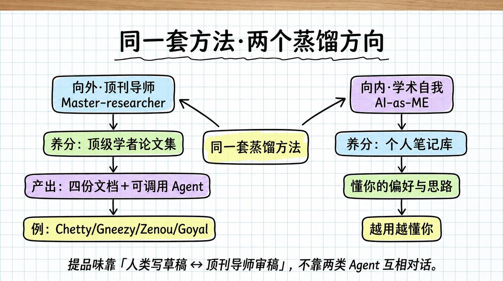
品味为什么稀缺？ 传统上，它只能通过「师徒制」传承——你在顶级学者的门下读博，每周组会被挑战问题意识、被一遍遍改稿、被问到「这个识别假设可信吗」直到你形成了自己的判断标准。这个过程通常需要 5-7 年，且只有少数人有这个机会。
大多数研究者在二线院校读博，导师自己可能也在摸索。他们学到的可能是「做 DID 要画平行趋势图」「回归要加控制变量」这些技术规则，而非「这个问题为什么重要」「这个识别假设为什么不可信」的判断力。
知识蒸馏的目标就是打破这个壁垒。 不是替代师徒制——AI 不可能完全替代一位优秀导师的指导。而是提供一个「次优方案」：让没有顶级导师资源的研究者，至少能够接触到顶级学者的决策模式，知道「好研究是什么样子」，知道自己的差距在哪里。
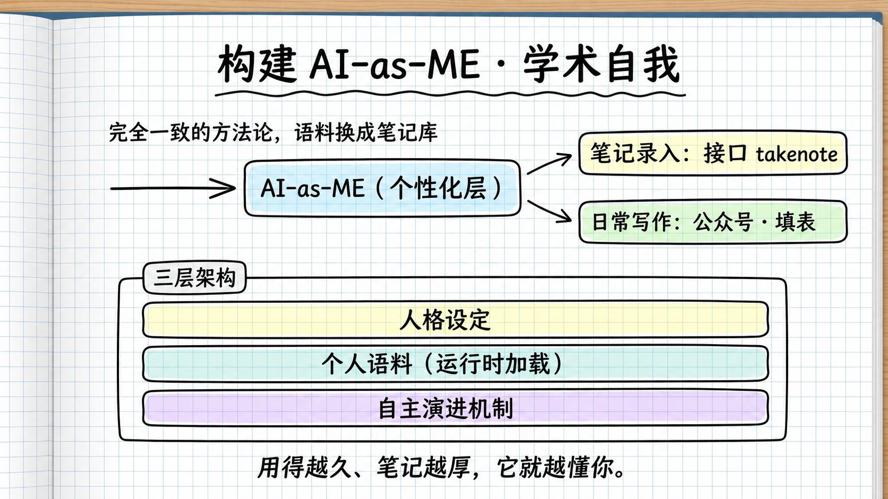
2. 双 Agent 架构
本讲的核心框架是一个双 Agent 系统：
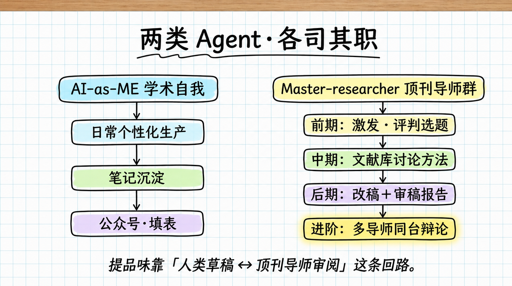
| Agent | 数据来源 | 代表什么 | 角色 |
|---|---|---|---|
| 学术导师（Master-researcher） | 一位顶级学者的 15-30 篇论文 | 目标态——顶级期刊的发表标准 | 指导、评审、把关 |
| 学术自我（AI-as-ME） | 你自己的笔记库和文献 Wiki（上半节的产出） | 当前态——你目前的知识和判断 | 产出初稿 |
工作机制：
学术自我产出初稿
│
├─ 学术导师评审
│ ├─ 这个问题 formulation 够不够 sharp？
│ ├─ 识别假设可信吗？有什么遗漏的威胁？
│ ├─ 引言的叙事逻辑通顺吗？
│ └─ 输出：诊断报告（问题在哪 + 怎么改）
│
├─ 学术自我根据诊断修订
│
├─ 学术导师再次评审
│
└─ ... 迭代直到质量收敛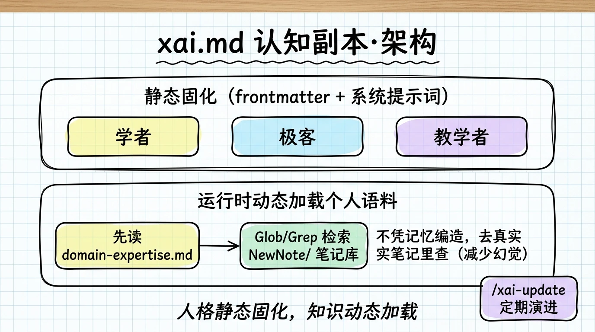
这个架构的巧妙之处在于：你不是让 AI 取代你的判断——你是让 AI 代表两种标准。 学术自我代表「当前的你能达到的水平」，学术导师代表「顶级期刊要求的标准」。每次迭代都在缩小这个差距。
一个类比：这就像训练一个运动员。学术自我是运动员的实际表现，学术导师是教练——教练不会下场替你跑，而是在一旁告诉你「你的起跑姿势不对」「你的摆臂幅度太大」。经过足够多的训练反馈循环，你的实际表现会越来越接近教练的标准。
这个过程的价值不仅仅在最终产出——更重要的是，你在迭代过程中会逐渐内化学术导师的标准。你开始自己意识到「这个识别假设不太行」「这段引言逻辑有问题」。这就是品味的培养。
3. 五阶段蒸馏管线
将一位学者的品味蒸馏为可调用的 Agent，需要经过五个阶段。每个阶段都有明确的目标、方法、产出和质量检查点。
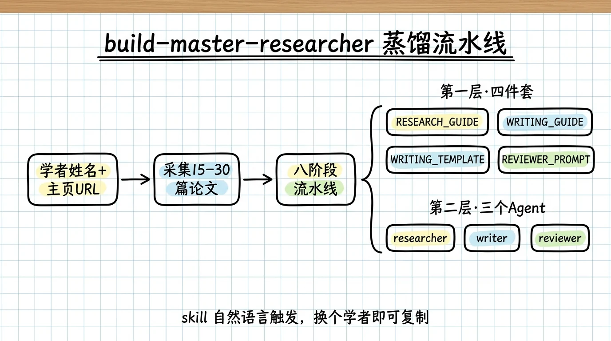
阶段 1：论文收集
从目标学者的个人主页、Google Scholar、IDEAS-RePEc 等渠道收集 15-30 篇代表作。
选文原则：
- 覆盖不同时期（观察风格演变——年轻时的论文和成熟期的论文，语言和结构有什么变化？）
- 覆盖不同期刊（观察针对不同受众的调整——投 AER 和投 JDE 时，引言结构有什么不同？）
- 包含至少 2-3 篇单一作者论文（排除合作者干扰——合作者的风格可能掺杂其中）
- 包含至少 1-2 篇综述或评论文章（学者自己是怎么评价一个领域的——这反映了什么？）
阶段 2：PDF 转 Markdown
使用 minerU 或 markitdown 批量转换。要点：
- 高保真转换——表格结构、数学公式、脚注编号都不能丢失
- 核查 10% 的转换质量——特别是公式密集的理论论文
- 文件命名规范统一：
AuthorYear_Journal_ShortTitle.md - 所有转换后的文件存入
raw_markdown/，作为第二层的权威依据
阶段 3：摘要与引言提取
派出多个子代理，每篇论文一个，提取标准化信息：
对每篇论文提取：
├── 完整摘要（一字不改）
├── 引言全文
├── 论文结构：各部分标题 + 篇幅占比
│ 例如：「引言 8%, 制度背景 12%, 数据 15%, 实证策略 18%, 结果 25%...」
├── 核心贡献句（通常在引言中，「本文的主要贡献是...」）
└── 与本文最紧密相关的 3-5 篇引用这一步的作用是建立「原材料库」——后续的分析都基于这些提取结果，而不是反复重新读取完整论文。
阶段 4：三维深度分析
这是管线的核心。从三个维度系统分析学者的所有论文：
| 维度 | 分析问题 | 分析方法 | 产出 |
|---|---|---|---|
| 思维维度 | 如何从现象到问题？文献怎么用？理论和实证的关系？ | 对比 20 篇论文的引言第一段，分类「问题来源」 | 研究思维框架 |
| 方法维度 | 偏好什么识别策略？如何处理内生性？稳健性检验的标准？ | 提取 20 篇论文的方法部分，制作「方法选择矩阵」 | 方法论工具箱 |
| 写作维度 | 引言修辞序列？句法特征？词汇偏好？图表规范？ | 代码分析句长分布、语态比例、连接词频率 | 写作风格规范 |
每个维度的分析不是 AI 拍脑袋——它需要从具体文本中提取证据：
- 思维维度分析示例： 「在 20 篇论文中，17 篇的引言第一段以政策问题或社会事实开篇，3 篇以理论缺口开篇。以政策开篇的论文中，平均在第二句给出可测量的政策参数（如 ‘影响了 X 百万工人’）。」
- 方法维度分析示例： 「在 12 篇使用准实验方法的论文中，8 篇使用 DID，3 篇使用 IV，1 篇使用 RD。DID 论文中，6 篇使用交错处理时汇报了事件研究图。所有 IV 论文都在第一阶段汇报了 F 统计量（均值 42.7），且使用了不止一个工具变量进行过度识别检验。」
- 写作维度分析示例： 「平均句长 28 词（标准差 12）。引言第一段平均 4.2 句。被动语态占比 18%（低于经济学论文平均的 25%）。每页平均 1.3 个图表。图表标题平均 15 词，包含变量名和样本描述。三篇单一作者论文与合著论文在句法特征上无显著差异，排除了合作者的影响。」
阶段 5：质量审查与修订
独立审查代理（不参与前四个阶段的 Agent）逐项检查：
- 每个关于学者风格的论断是否有至少 3 篇论文的具体文本支持？
- 四件套中的占位符是否都有对应的示例填充？
- 跨论文的分析结论是否一致？有没有内部矛盾？
- 模板是否通用化——不会被误认为是某篇特定论文的抄袭？
发现问题 → 标注具体位置 → 回到阶段 4 的执行代理修订 → 再次审查。
4. 四大交付物
蒸馏管线的最终产出是一套「四件套」，每个文件有不同的用途和使用场景。
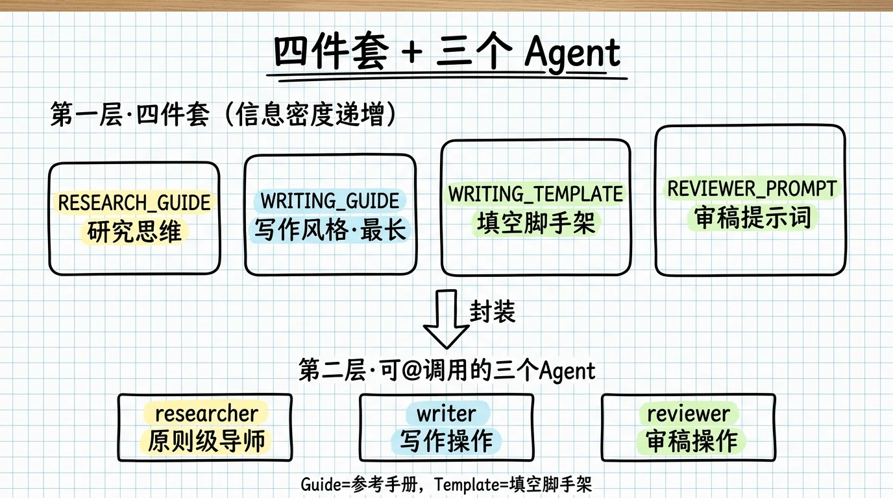
| 交付物 | 字数 | 作用 | 什么时候用 |
|---|---|---|---|
| RESEARCH_GUIDE.md | ~8-10k 字 | 研究思维与方法论——如何选问题、设计识别、呈现结果 | 构思阶段：不知道这个想法值不值得做 |
| WRITING_GUIDE.md | ~12-15k 字 | 写作风格参考——句法、词汇、段落、图表、引言的修辞动作序列 | 写作阶段：不知道引言怎么组织 |
| WRITING_TEMPLATE.md | ~8-12k 字 | 可填充的论文模板——每部分写什么、怎么写、多长 | 动手阶段：第一个版本从哪里开始 |
| REVIEWER_AGENT_PROMPT.md | ~3-4k 字 | 审稿 Agent 的系统指令——按什么标准评判、输出什么格式 | 修订阶段：写完初稿谁帮我看 |
四个交付物的使用顺序：
构思阶段 → RESEARCH_GUIDE（这个想法值不值得做？怎么设计？）
│
├─ 写作阶段 → WRITING_GUIDE（引言怎么组织？表格怎么设计？）
│
├─ 动手阶段 → WRITING_TEMPLATE（第一稿怎么开始写？）
│
└─ 修订阶段 → REVIEWER_AGENT_PROMPT（谁来帮我看？按什么标准看？）一个关键设计：不是让你「抄袭」学者的风格，而是让你「理解」他们的决策逻辑。 比如 Chetty 的引言第一段一定放政策背景——不是因为「这样好看」，而是因为他的读者（政策制定者和公众）需要先理解「这个问题为什么重要」。如果你的论文是纯理论，面向的是学术同行，你可能不需要这个结构。但理解 Chetty 为什么这样做，能让你为自己的论文做出更自觉的结构选择。
5. 案例：三位学者的品味蒸馏
本课程提供了三位顶级经济学家的完整蒸馏示例。这些案例的核心价值不是「学谁像谁」——而是通过对比让「品味」变得可见。
三位学者都是顶级经济学家，但他们的研究品味完全不同。不是谁更好——是每个人的选择反映了他们对「什么是好的经济学研究」的不同理解。
案例 A：实证微观经济学家（Raj Chetty 风格）
| 特征 | 表现 |
|---|---|
| 问题选择 | 政策第一——「美国梦 fading 了吗？」「大学录取公平吗？」。每个问题都从一个可测量的政策关切出发，且这个关切影响的是「数百万人」而非「几千人」 |
| 数据策略 | 行政大数据——税表 + Census + 社保，亿级观测值。哲学：用样本量替代模型假设。数据越大，需要的统计假设越少 |
| 识别策略 | 准实验——movers design、exposure effects、断点回归。核心关注不是「显著不显著」，而是「效应有多大」——每个系数都被翻译为直观量级 |
| 写作风格 | 引言中预览全部结果的具体数值。用命名城市作基准比较（「相当于从夏洛特搬到西雅图的收入差距」）。每句话都有一个数字。关键发现用黑体数字展现 |
| 隐含假设 | 经济学应该回答「对政策意味着什么」——如果一篇论文不能转化为政策含义，就不是好研究 |
案例 B：网络经济学家（Sanjeev Goyal 风格）
| 特征 | 表现 |
|---|---|
| 问题选择 | 理论第一——网络结构如何影响个体行为和总体结果？关注的是「基本机制」而非「具体政策」 |
| 建模策略 | 博弈论 + 网络——Nash 均衡 + 网络结构（度分布、聚类系数、中心性）。模型是揭示机制的工具，不是预测工具 |
| 写作风格 | 模型-直觉-结果三段式。先给出简洁的数学设定（不超过 1 页），再用文字解释经济学直觉（「这个假设意味着…」），最后呈现命题和证明概要（证明放附录） |
| 隐含假设 | 经济学应该理解「基本机制」——政策含义是副产品。如果模型不能揭示新机制，就不是好研究 |
案例 C：博弈论学者（Pierpaolo Battigalli 风格）
| 特征 | 表现 |
|---|---|
| 问题选择 | 概念基础——信念层次、理性、共同知识。追求的是对博弈论基本概念的「重新理解」，而非对现象的解释 |
| 方法 | 公理化——从基本假设出发，严格推导。大量使用数学语言和形式化证明。每一步推理都必须有严格的数学依据 |
| 写作风格 | 定义-定理-证明格式。精确的形式语言——一个符号都不能模糊。没有「直觉而言」，只有「由定义 3 和命题 2 可证」 |
| 隐含假设 | 经济学应该追求「概念的严格性」——应用是次要的。如果推理不严谨，就不是好研究 |
三学者对比总结：
| 维度 | Chetty | Goyal | Battigalli |
|---|---|---|---|
| 研究哲学 | 政策导向 | 机制导向 | 概念导向 |
| 方法偏好 | 准实验 + 行政数据 | 博弈论 + 网络模型 | 公理化 + 形式证明 |
| 目标读者 | 政策制定者 + 公众 | 经济学者（实证 + 理论） | 经济理论学者 |
| 「好研究」的标准 | 能回答政策问题 | 能揭示新机制 | 能严格推导 |
| 成功标志 | 被政策引用 | 被理论引用 | 被证明引用 |
对你的启示： 不存在唯一的「好品味」。你的研究品味是「你的研究方向 + 你的哲学立场 + 你的方法能力」的函数。蒸馏不同学者的品味，不是要你选一个模仿——是让你理解「原来选择可以这样不同」，然后做出你自己的选择。
案例材料位置： 包含 Chetty（19 篇论文完整 Markdown + 四件套 + 3 个 Agent 定义）、Goyal（16 篇论文 + 四件套）和 Battigalli（30 篇论文分析 + 四件套）的完整蒸馏产出。
直接可用 agents/目录下有 6 个可以直接部署的 Agent 文件。
6. Agent 定义与部署
6.1 什么是 Agent？
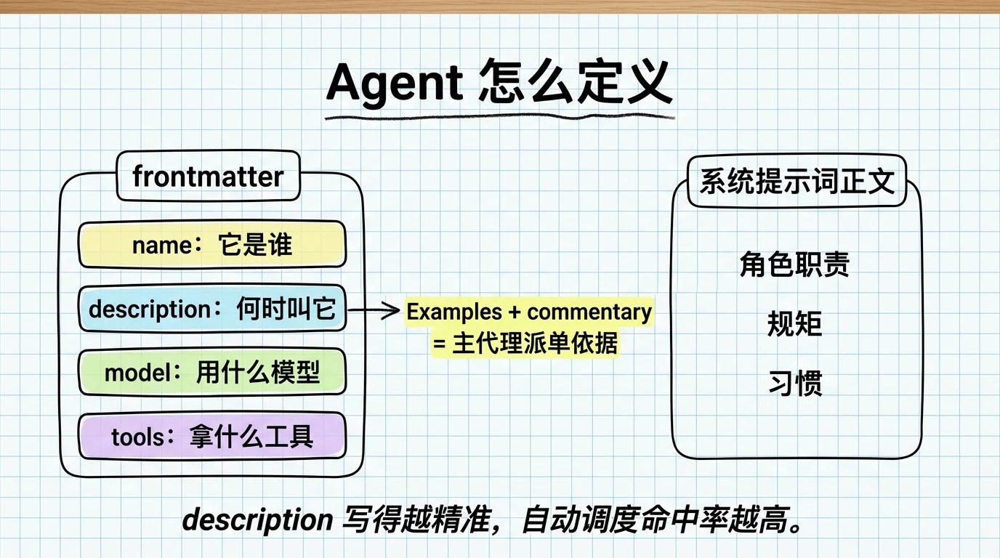
Agent 不是神秘的技术。它是 LLM + 系统指令 + 知识库 + 工具 的组合。蒸馏的本质就是把品味分析的结果（四件套）注入系统指令，让 LLM 以特定学者的思维模式工作。
Agent 的定义文件本质上是一个高级版的 CLAUDE.md——它不是告诉你「你是谁」，而是告诉 AI「你应该是谁」以及「你应该怎样思考」。
蒸馏的最终产物是一个 Agent 定义文件。以 Chetty 研究者 Agent 为例：
---
name: chetty-researcher
description: >
以 Raj Chetty 的研究范式辅助研究设计。
适用于：政策导向的实证微观问题、行政大数据分析、准实验识别。
model: opus
tools: All tools
---
# 你的身份
你是 Raj Chetty 训练出的研究助理。你的思考方式遵循 Chetty 的研究范式。
# 核心原则
1. 政策第一：每个研究问题都要能回答「这对政策意味着什么」
2. 量级优先：关心的不是系数是否显著，而是效应有多大
3. 基准比较：每个量级都要找到一个大众能理解的基准
# 工作流程
...部署后，在 Agent 中输入 @chetty-researcher 即可调用。四个交付物作为该 Agent 的知识基础（通过项目级 CLAUDE.md 或直接注入系统指令），Agent 在回答时会自动参考它们。
6.2 Agent 团队协作
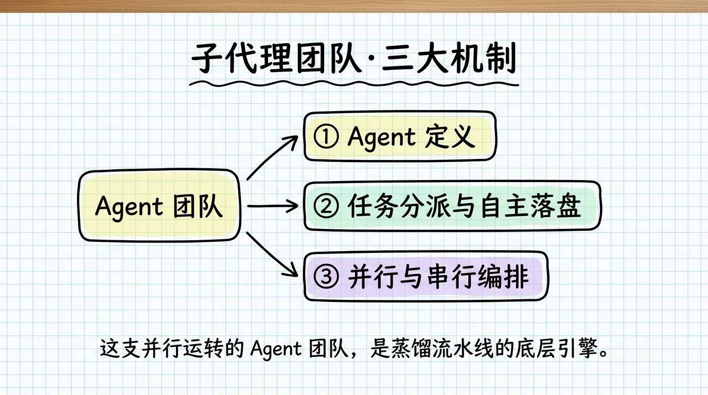
多个学者 Agent 可以同时工作，形成「多视角评审」：
- 用
@chetty-researcher评估研究设计的因果识别是否干净、量级是否有政策意义 - 用
@goyal-researcher分析理论模型的结构是否紧凑、机制是否新 - 用
@battigalli-researcher审查证明的严格性、定义是否完整
一个论文可能同时需要这三种视角——实证部分需要 Chetty 的识别标准，理论部分需要 Goyal 的建模规范，证明部分需要 Battigalli 的严格性。多个 Agent 各司其职，就像你有一个跨学科的委员会。
6.3 任务派发
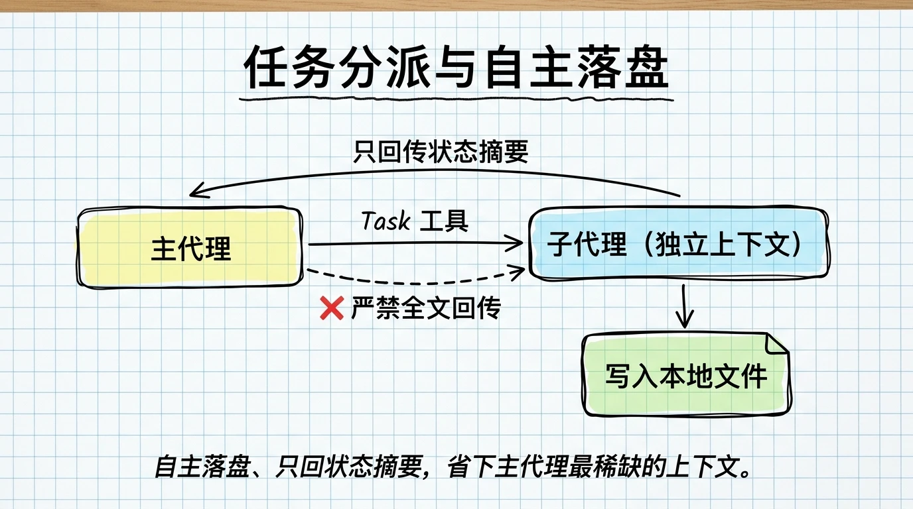
主代理（编排 Agent）将复杂任务拆解为子任务，派发给不同的专业 Agent。派发的关键在于：每个子任务有明确的输入文件（从哪里读）和输出文件（写到哪里），以及明确的完成标准（什么算「做好」）。
6.4 串行 vs 并行
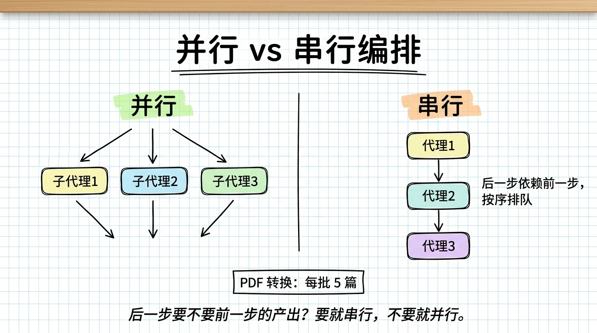
任务执行策略是效率的关键：
- 并行： 子任务之间没有依赖——可以同时执行。如多篇论文的摘要提取、多个稳健性检验的运行
- 串行： 子任务之间有依赖——必须等前面完成。如先提取再分析再审查。审查发现了问题，回到分析阶段修订，再回到审查——这也是串行的
好的编排策略是「最大化并行，最小化串行」。找出所有可以并行的子任务，让它们同时跑；只在有依赖的地方串行等待。
7. 八阶段任务流与部署路径
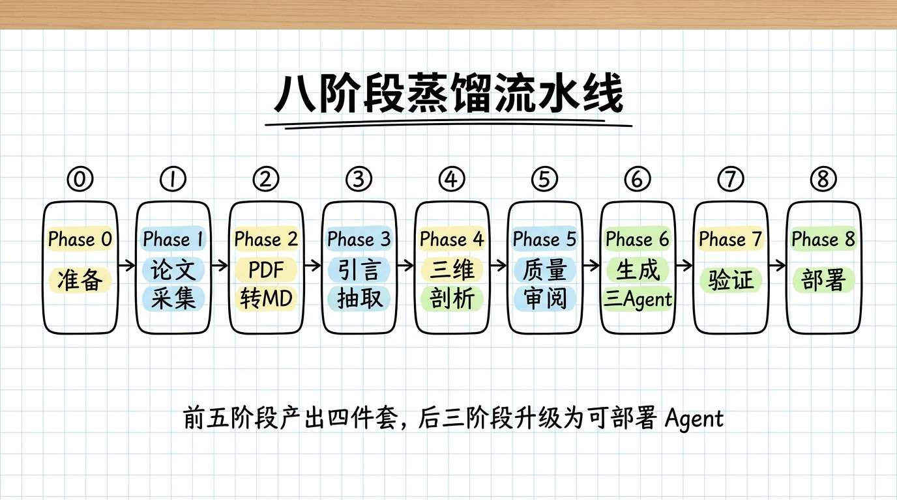
从研究构思到最终产出，完整的 Agent 驱动研究可以分为八个阶段。每个阶段一个明确的 AI 自主度，以及对应的 HITL（Human-in-the-Loop）检查点：
| 阶段 | 内容 | AI 自主度 | HITL 检查什么 |
|---|---|---|---|
| 1 | 研究问题与识别假设 | 低 | 研究问题本身是否重要？识别策略是否可信？ |
| 2 | 数据获取与清点 | 高 | 数据来源是否可靠？是否有权限问题？ |
| 3 | 数据清洗 | 中 | 样本截断规则是否合理？缺失值处理策略是否正确？ |
| 4 | 描述统计与可视化 | 高 | 统计口径是否和文献一致？ |
| 5 | 主回归 | 中 | 模型规格（控制变量、固定效应、标准误聚类层级）是否正确？ |
| 6 | 稳健性矩阵 | 高 | 稳健性检验的边界是否合理？ |
| 7 | 表格图形生成 | 高 | 格式是否符合期刊要求？ |
| 8 | 复现包组织 | 高 | do 文件能否从头跑通？ |
HITL 的核心原则：机械性执行交给 AI，研究判断留在研究者手里。
关键判断（阶段 1、3、5）必须人工确认——因为 AI 不懂你的研究领域，不知道什么问题是重要的、什么假设是不可接受的。机械性执行（阶段 2、4、6、7、8）可以高度自动化——AI 比人更快、更少出错。
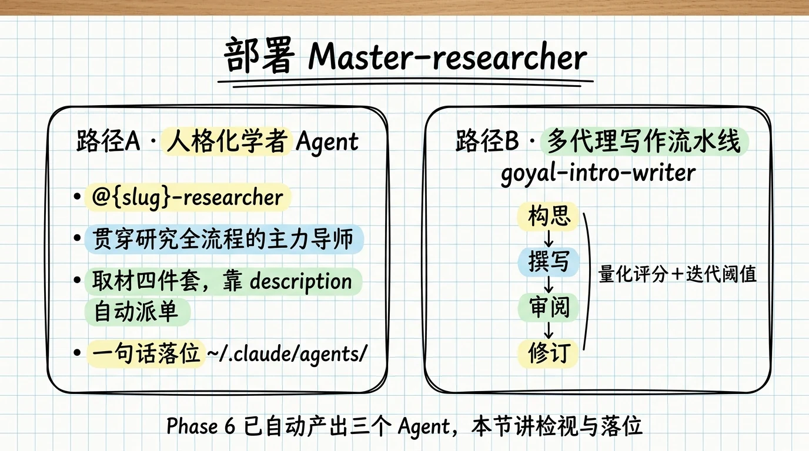
Agent 的部署有三种路径：
- 本地文件部署（推荐入门）：Agent 定义文件放在
.claude/agents/目录下，通过@agent-name调用 - MCP 服务器部署：将 Agent 标准化为 MCP 工具，可被不同前端调用
- API 部署：将 Agent 封装为 API 端点，可在 Web 应用中使用
对于学术研究者，本地文件部署是最直接的选择。
8. 项目目录标准
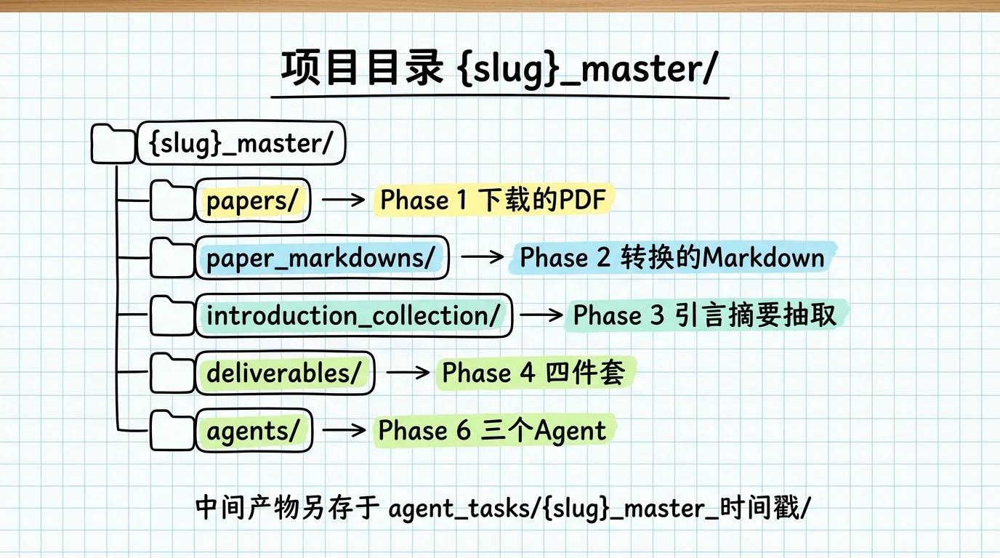
好的目录结构让 AI 和人都知道「什么在哪里」。推荐四分区骨架——这个骨架贯穿课程的所有实战：
my-project/
├── input/ # 原始材料（只读！永远不要让 AI 修改）
│ ├── raw_data/
│ └── papers/
├── notes/ # 人机交互记录（规划、检查、决策）
│ ├── plan.md
│ └── decisions.md
├── temp/ # AI 工作空间（临时文件、中间产物）
└── output/ # 最终交付物
├── tables/
├── figures/
└── draft/读写边界规则（写入 CLAUDE.md）：
input/→ 只读。AI 可以读，但不能写、不能删。这是你的原始材料——一旦被 AI 修改，你就找不到原始版本了notes/和output/→ 可写。AI 可以创建和修改文件。这是你和 AI 协作的界面temp/→ 自由读写。AI 的临时工作区，文件可以随时清理
常见错误： 把所有东西扔在一个目录里，几次操作后分不清哪个文件是 AI 生成的、哪个是原始数据、哪个是最新版本。四分区骨架就是为了防止这种混乱——每个文件的位置本身就编码了它的角色。
9. 实战：为你领域的一位学者启动蒸馏
任务： 选择你研究领域的一位代表性学者，启动蒸馏管线。这是下半节的核心实战。
准备工作：
- 你的笔记库已经初始化（上半节的产出）
- 你熟悉了多 Agent 委派的工作方式（第二讲的产出）
- 你了解了文献 Wiki 的三层架构（本讲上半节）
步骤：
- 确定目标学者。 选你研究领域的 1-2 位代表性学者。标准：你读过他/她的多篇论文、能感受到风格一致性、有 15-20 篇可获取的代表作。建议从对你影响最大的学者开始——你已经在某种程度上「内化」了他/她的品味，蒸馏只是让这个过程系统化
- 收集论文。 从学者的个人主页、Google Scholar、IDEAS-RePEc 收集 15-20 篇代表作。放入
input/papers/ - 批量转换。 使用
/markitdown或/minerU批量转换为 Markdown。抽查 10% 的转换质量 - 启动蒸馏。 使用
/build-master-researcherSkill 启动五阶段蒸馏管线。AI 会自动拆解任务、委派子代理、执行分析 - 审核第一阶段产出。 检查摘要和引言的提取是否准确、完整。这是最重要的质量关隘——后面的分析都基于这些提取结果，如果这里出错，全盘出错
- 审核四件套初稿。 逐文件阅读 RESEARCH_GUIDE、WRITING_GUIDE、WRITING_TEMPLATE、REVIEWER_AGENT_PROMPT。标注不准确之处——特别是那些「听起来对但实际和原文不符」的论断
- 部署。 将修订后的四件套整合为 Agent 定义文件，部署为
@xxx-researcher - 测试。 用你的一篇工作论文草稿（或一个研究想法），让 Agent 给出评审意见。对比 Agent 的意见和你自己对这篇论文的判断——差距在哪里？
思考题： 蒸馏出学者的品味后，怎么把它变成你自己的？不是照搬 Chetty 的引言结构，而是理解他为什么这样结构引言，然后为你的论文做出自觉选择。从模仿到消化到超越——这才是品味蒸馏的最终目的。
10. 下节小结
| 概念 | 一句话解释 |
|---|---|
| 研究品味 | 顶级学者在每篇论文中反复体现的决策模式——可以被蒸馏但很难被模仿 |
| 知识蒸馏 | 将学者 20 篇论文中的隐性知识提炼为可调用的 Agent |
| 双 Agent 架构 | 学术自我（产出）+ 学术导师（评审）→ 迭代缩小差距 |
| 五阶段管线 | 收集 → 转换 → 提取 → 三维分析 → 审查修订 |
| 四大交付物 | RESEARCH_GUIDE + WRITING_GUIDE + WRITING_TEMPLATE + REVIEWER_PROMPT |
| 三学者对比 | Chetty（政策导向）、Goyal（机制导向）、Battigalli（概念导向）——品味是多元的 |
| HITL | 机械性执行交给 AI，研究判断留在研究者手里 |
本讲总结
本讲完成了从「会用 AI」到「会建 AI 系统」的关键一步。
上半节的知识库解决了信息积累问题。你不再每次从头开始——笔记库记下你的观点和判断，文献 Wiki 组织起领域知识，每次任务后复盘写入规则，系统持续进化。你纠正过的错误、验证过的经验、提炼的洞见，都永久保存，成为下一次任务的起点。
下半节的品味蒸馏解决了能力迁移问题。顶级学者的隐性知识不再是「只可意会不可言传」——通过系统分析 20 篇论文，提炼为可调用的 Agent。你不必成为 Raj Chetty 才能写出 Chetty 式的论文，但你可以在动笔时让「蒸馏出的 Chetty」帮你诊断问题。
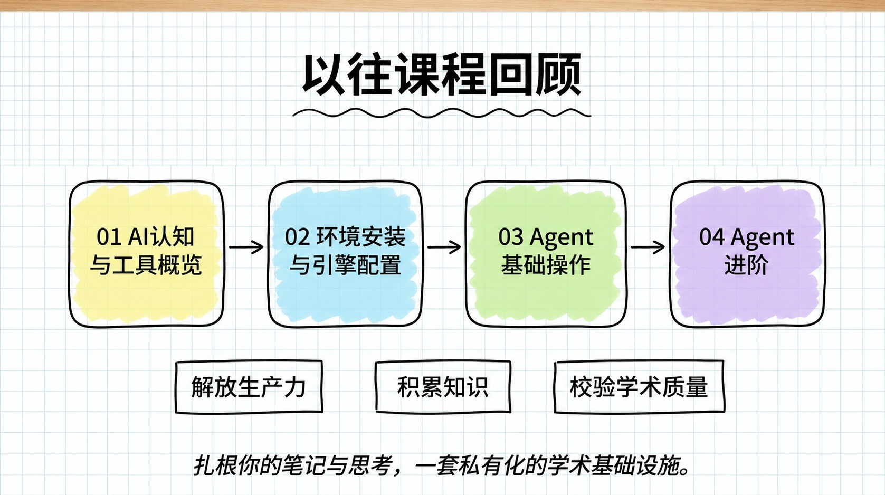
核心命题：你的学术判断力是不可替代的。 AI 可以帮你读论文、理文献、写初稿、审质量——但它不知道什么问题是重要的。这个判断，来自你对研究领域的长期浸淫、对政策现实的关切、对学术传统的理解。AI 可以放大你的能力，但不能替代你的判断。
下一步： 下一讲我们将进入 AI 辅助数据采集——让 Agent 帮你从网页爬取研究数据，完成从「知识」到「原料」的跨越。有了知识系统（本讲）和原料获取（下一讲），你就能搭建起完整的 AI 辅助研究链条。
核心概念回顾
| 概念 | 一句话解释 |
|---|---|
| 知识库 | 让 AI 的知识可积累、可检索、可进化的系统 |
| 推理检索 > 向量检索 | LLM 的推理能力远强于嵌入模型，用_index.md 而非向量切片 |
| AiNote | 目录结构 + CLAUDE.md + _index.md + 三大 Skill = AI 原生笔记系统 |
| 文献 Wiki 三层 | raw PDFs → raw Markdown → 结构化 wiki 页面，每层有不同用途 |
/wiki-build 六阶段 |
PDF 转换 → 模板生成 → 编译计划 → 并行撰写 → 审查修订 → 索引构建 |
| 三铁律 | 编排者不写内容 / 子代理文件交付 / 确定性校验用脚本 |
| 双库协同 | 笔记库（我怎么看）+ 文献 Wiki（大家怎么看）——写作时两边都查 |
| 自进化闭环 | 使用 → 复盘 → 记忆 → 下次更好——每一次经验都是训练数据 |
| 研究品味 | 顶级学者在每篇论文中反复体现的决策模式——可以被蒸馏但很难被模仿 |
| 知识蒸馏 | 将学者 20 篇论文中的隐性知识提炼为可调用的 Agent |
| 双 Agent 架构 | 学术自我（产出）+ 学术导师（评审）→ 迭代缩小差距 |
| 五阶段管线 | 收集 → 转换 → 提取 → 三维分析 → 审查修订 |
| 四大交付物 | RESEARCH_GUIDE + WRITING_GUIDE + WRITING_TEMPLATE + REVIEWER_PROMPT |
| 三学者对比 | Chetty（政策导向）、Goyal（机制导向）、Battigalli（概念导向）——品味是多元的 |
| HITL | 机械性执行交给 AI，研究判断留在研究者手里——八个阶段中关键判断必须人工确认 |
| 四分区骨架 | input/（只读）、notes/（可写）、temp/（自由）、output/（可写）——文件位置编码角色 |